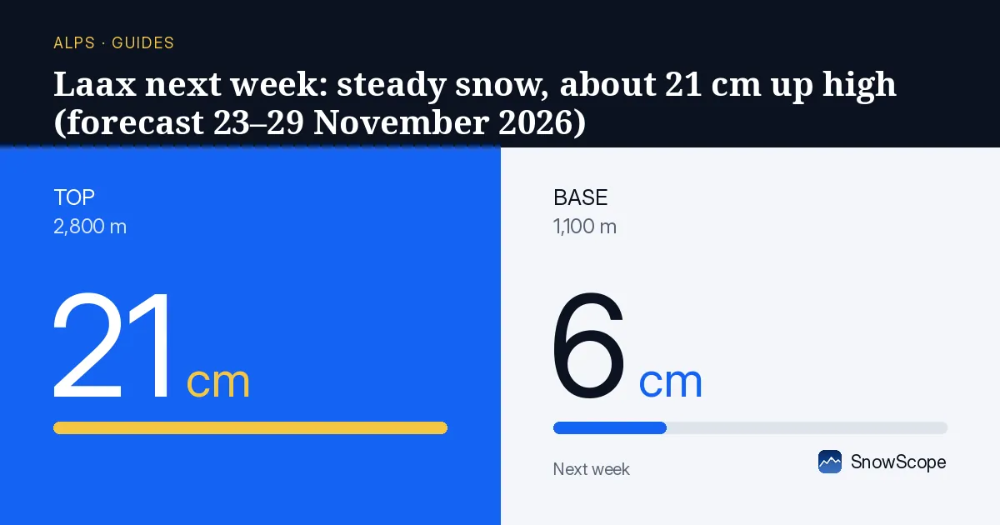

Laax next week: steady snow, about 21 cm up high (forecast 23–29 November 2026)
Next week Laax receives steady snow spread across seven days, not one big storm. The upper slopes near 2800 m collect about 21 cm (possibly 4–38 cm depending on the exact track), with Thursday 26 November as the single heaviest day but several smaller falls throughout the week.
See the live snow forecast for Laax in the SnowScope appSnow depth, powder alerts and the 3D map, free.
What arrives and when
Between 23 and 29 November, Laax's upper slopes receive 21 cm of snow across four separate events. The first comes Monday 23 (around 3 cm, up to 5), then Wednesday 25 (4 cm, up to 6), Thursday 26 (6 cm, up to 13) and Sunday 29 (5 cm, up to 10). The other days contribute little.
Mid-mountain around 2100 m gets 17 cm total for the week, while the base near 1100 m receives only 6 cm. The forecast range widens at altitude: the top could see anywhere from 4 to 38 cm depending on how far north-west the storm track pushes; the base might collect just 1–10 cm.

Building on what is already there
This current week (17–20 November) already delivers 28 cm to the upper slopes, so next week's fresh snow sits on existing cover rather than bare rock and grass. That changes what skiers will find: not a rebuild from nothing, but top-ups that will improve conditions through the week.
The base, by contrast, starts almost bare (0 cm this week) and gains just 6 cm next week, so the snow line will stay well above 1100 m for most of the period.
Height decides everything
The 15 cm gap between top (21 cm) and base (6 cm) tells the whole story. Rain or wet snow will fall at village level while real dry snow reaches only the upper mountain. Flims and Falera, the lower sunny villages, stay marginal; the Vorab glacier and the terrain around Crap Sogn Gion are where the snow accumulates deepest.
Thursday 26 is the peak day (6 cm, possibly 13 cm at best), but it is not a powder day—it is enough to soften the piste after weeks of thin cover, and enough to make higher slopes worth riding.
Uncertainty is large
The forecast range spans 4–38 cm at the top. That huge spread means whether Laax gets a small top-up or a meaningful replenishment depends on a storm track that is still undecided. By Thursday some clarity should emerge; for now, treat the middle numbers (21 cm at the top) as a reasonable guess, not a guarantee.
These numbers update each day on the Laax resort page as new information arrives.
Compared with nearby resorts
Laax's 21 cm at the top is level with Andermatt (48 km away, also 21 cm) and ahead of Davos (46 km away, 16 cm) and St. Moritz (59 km away, 19 cm). Snow totals alone will not decide between these resorts next week; aspect, height, and which lifts open will matter more.
In the central Alps next week, the pattern favours slopes that face north and north-west, where older snow persists and new falls stick longest.
What to do when you are there
Ride high every day: the gap between 6 cm at the base and 21 cm at the top means lower terrain stays marginal. Plan morning sessions on the Vorab glacier and upper open slopes, then drop lower as the day warms and the snow softens.
Watch the avalanche bulletin before leaving the groomed runs. New snow on existing cover always adds risk, especially on steep slopes and in gullies. The Swiss avalanche bulletin is the reference for off-piste decisions.
Tips for skiers
- Ride the Vorab glacier and Crap Sogn Gion: that is where snow depth peaks. Avoid Flims and Falera lower slopes unless conditions have improved markedly.
- Thursday 26 November is the best single day, but the week builds gradually; each small fall helps. Do not skip the week hoping for one perfect day.
- Check the resort's lift opening dates: snow on the mountain does not mean the cable cars are running. Plan lifts around what is actually open.
- New snow on the upper slopes brings avalanche risk. Respect the Swiss avalanche bulletin before riding steep terrain or couloirs off the piste.
- The base gets rain or wet snow most of the week. Pack a midlayer and expect to ride high; bring a sun cream and goggles for the upper glacier.
About these numbers
Resort snow depths are the deepest snow on the resort's upper slopes on the date shown; they are estimates for an area, not a measurement at one point. Forecasts can change. Always read the official avalanche bulletin before going off-piste.
Cite this report
For research, teaching or the press: the numbers and charts are free to reuse under CC BY 4.0 with this citation.
SnowScope (2026), Laax next week: steady snow, about 21 cm up high (forecast 23–29 November 2026), https://snowscope.app/blog/en/2026/11/laax-snow-forecast-next-week-23-29-november-2026.html, accessed 2026-11-16
SnowScope (Atlas Labs). (2026, November 16). Laax next week: steady snow, about 21 cm up high (forecast 23–29 November 2026). SnowScope snow reports. https://snowscope.app/blog/en/2026/11/laax-snow-forecast-next-week-23-29-november-2026.html
BibTeX
@misc{snowscope2026laaxsnowforecastnextweek,
author = {{SnowScope (Atlas Labs)}},
title = {Laax next week: steady snow, about 21 cm up high (forecast 23–29 November 2026)},
year = {2026},
month = nov,
howpublished = {\url{https://snowscope.app/blog/en/2026/11/laax-snow-forecast-next-week-23-29-november-2026.html}},
note = {Published 2026-11-16 11:34 UTC; accessed 2026-11-16}
}· CC BY 4.0 · Methods, data and tools →
Laax: snow and temperature by height, this winter vs last (tools) →
Follow Laax
Free: a message when fresh snow is coming, and the forecast every morning.
More snow reports

Orcières Merlette offers a high base at 1826 m and a 6-day pass from 227 EUR, making it a reliable choice for a December ski trip.

Obertauern December skiing: 43 cm on a typical 15 December at mid-mountain, and a 6-day pass of EUR 331 before Christmas. Snow history and prices.

Montgenèvre has 56 cm of usual December snow at its base, giving weekend drivers deeper early cover than Sestriere across the border.